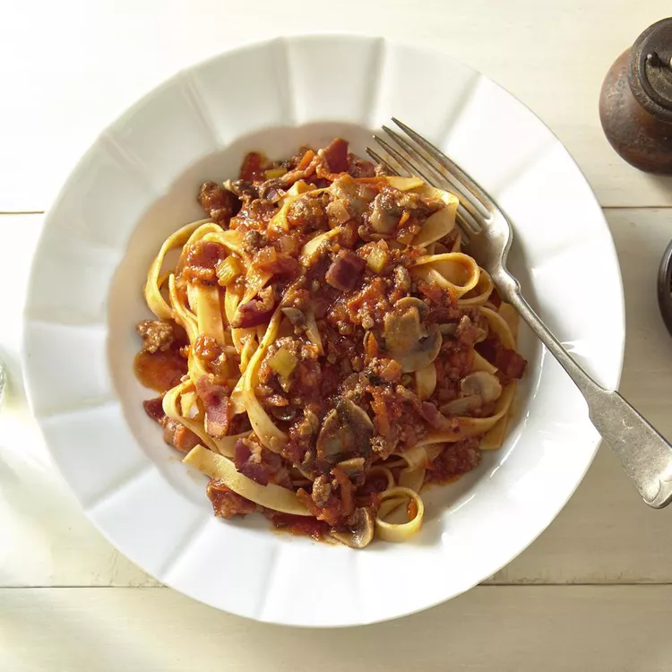

Bolognese Pasta

Description
A simple Bolognese recipe for excellent chunky pasta sauce with beef, pork, lots of vegetables, and tons of flavor.
Ingredients
- 2 tablespoons olive oil
- 1 large onion
- 4 slices bacon
- 1 clove garlic
- 1 pound lean ground beef
- 1/2 pound ground pork
- 1 can plum tomatoes
- 1 pound pasta
Steps
- Warm oil in a large skillet over medium heat. Sauté onion, bacon, and garlic in hot oil until bacon is browned and crisp, about 10 minutes.
- Place the same large skillet over medium-high heat. Cook and stir ground beef and pork in the hot skillet until browned and crumbly, 5 to 7 minutes.
- Stir bacon mixture, tomatoes, mushrooms, tomato sauce, carrots, celery, wine, stock, basil, oregano, salt, and pepper into meat mixture.
- Meanwhile, bring a large pot of lightly salted water to a boil. Add pasta and cook in boiling water until al dente
- Serve sauce over hot pasta.